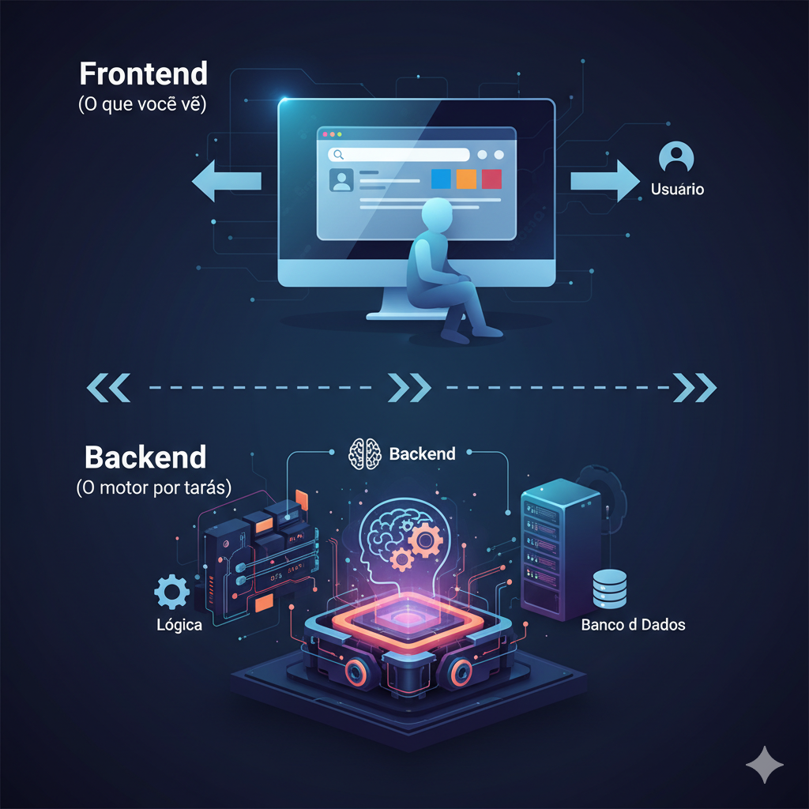

Quem é você?
Antes de começarmos, gostaria de conhecer um pouco mais sobre vocês. Por favor, respondam às perguntas no quadro abaixo para que eu possa adaptar a aula da melhor forma possível!
Situação-Problema: A Escolha da Tecnologia Certa
🚀 O Desafio da Startup "InovaTech"
Uma nova startup, a "InovaTech", quer criar uma plataforma online. A equipe é pequena, o prazo é curto e o orçamento é limitado. Eles precisam escolher uma linguagem de programação para o backend.
A escolha precisa ser estratégica: a linguagem deve ser rápida para desenvolver, fácil de aprender para novos membros da equipe e poderosa o suficiente para crescer e adicionar novos recursos no futuro, como análise de dados.
A grande questão é: seria o Python a escolha ideal para a InovaTech? Como essa linguagem pode resolver esses desafios?
Ao longo desta aula, vamos atuar como consultores para a InovaTech, explorando o Python para descobrir se ele é a ferramenta certa para o trabalho.
🎯 Objetivos desta Aula
Ao final desta jornada, você será capaz de:
- Compreender os fundamentos da programação backend, o motor que impulsiona aplicações complexas.
- Desenvolver o raciocínio lógico para resolver problemas de forma estruturada.
- Escrever seus primeiros scripts em Python, uma das linguagens mais poderosas e versáteis do mundo.
- Avaliar por que Python é uma escolha forte para projetos de desenvolvimento web, como o da InovaTech.
O que é Backend?
O backend é a parte "invisível" de um sistema, o motor que trabalha nos bastidores. Ele é responsável por fazer a ponte entre a interface que você vê (front-end) e o banco de dados, garantindo que tudo funcione corretamente.

Linguagens de Programação
Existem diversas linguagens para o backend, cada uma com um estilo. Vamos ver os principais conceitos:
- Linguagens Compiladas (Ex: C++, Java): O código é traduzido inteiramente para a linguagem da máquina antes da execução. Isso gera um arquivo executável otimizado, que tende a ser muito rápido. Pense em uma planta de engenharia detalhada que é usada para construir um prédio de uma vez.
- Linguagens Interpretadas (Ex: Python, JavaScript): O código é lido e executado linha por linha por um programa chamado "interpretador". É mais flexível e fácil de testar. É como um mestre de obras que lê a planta e constrói o prédio passo a passo.
- Programação Orientada a Objetos (POO): É um estilo (paradigma) de programação onde organizamos o código em "objetos" que possuem dados (atributos) e comportamentos (métodos). Python é fortemente orientado a objetos, o que ajuda a criar sistemas complexos e reutilizáveis, como blocos de montar.
Python combina a simplicidade de uma linguagem interpretada com o poder da Programação Orientada a Objetos, tornando-o uma escolha versátil e poderosa. 🧙♂️🏗️
Por que escolher Python?
Python é uma das linguagens de programação mais populares atualmente e é também uma ótima opção para programar no Backend.
Clique nos cards para virar!
Estas empresas utilizam Python em seus backends! Clique em cada uma para saber onde é usado! 👍
✍️ Sua Vez de Pesquisar!
Agora que você viu algumas vantagens, pesquise por que grandes empresas escolhem Python em vez de outras linguagens para seus projetos de backend.
Vamos compartilhar com os outros estudantes suas descobertas!! 😁
Dicas de busca:
- "Why companies use Python for backend"
- "Python vs Java for web development"
- "Netflix Python backend"
Anote suas descobertas abaixo:
Variáveis e Operadores em Python
Antes de programar, vamos entender os blocos de construção fundamentais: variáveis e operadores.
O que são Variáveis?
Pense em variáveis como "caixas" etiquetadas onde você guarda informações. Em Python, você cria uma variável simplesmente dando um nome a ela e usando o sinal de igual (`=`) para atribuir um valor.
idade = 25
# A variável 'saudacao' guarda o texto "Olá, Mundo!"
saudacao = "Olá, Mundo!"
Operadores Lógicos e de Comparação
Usamos operadores para comparar valores e tomar decisões. Eles sempre retornam `True` (verdadeiro) ou `False` (falso).
- `==` (igual a)
- `!=` (diferente de)
- `>` (maior que)
- `<` (menor que)
- `and` (E lógico: ambos os lados devem ser verdadeiros)
- `or` (OU lógico: pelo menos um lado deve ser verdadeiro)
Primeiros Passos em Python
1. Mostrando uma mensagem com `print()`
A primeira coisa que aprendemos em qualquer linguagem é como "falar". Em Python, usamos a
função print() para exibir mensagens na tela. Clique em
Executar.
2. Guardando informações com Variáveis
Podemos guardar informações em "caixas" chamadas variáveis. Aqui, guardamos o texto "Maria"
na variável nome e depois o exibimos.
3. Interagindo com o usuário com `input()`
Agora, vamos tornar o programa interativo! A função input() pausa o programa e
espera que o usuário digite algo. Sua vez: mude o texto dentro do
input() para perguntar a cidade do usuário e clique em Executar.
4. Trabalhando com Números
Python lida com diferentes tipos de números, como inteiros (int) e números com casas decimais (float). Clique em Executar para ver como funcionam.
5. Operações Matemáticas
Você pode usar Python como uma calculadora poderosa. Experimente mudar os valores de a e b e executar o código novamente.
Controlando o Fluxo: Condicionais e Repetição
Agora que você conhece o básico, vamos dar superpoderes ao seu código! Vamos ensiná-lo a tomar decisões e a repetir tarefas. Bem-vindo à caixa de ferramentas do programador!
Ferramenta 1: O Poder de Decidir com `if`, `elif` e `else` 🚦
Com o if, seu programa pode escolher qual caminho seguir, como em um jogo. Ele verifica se uma condição é verdadeira.
Ferramenta 2: O Poder de Repetir com o loop `for` 🤖
Com o loop for, seu programa pode executar uma tarefa várias vezes, como um robô trabalhador. É perfeito para percorrer itens em uma lista.
Estruturas de Dados: As Caixas de Ferramentas
Imagine que você tem vários itens para guardar. Em vez de criar uma variável para cada um, você pode usar "caixas" especiais chamadas Estruturas de Dados. Vamos conhecer as três principais do Python!
1. Listas 🚂: O Trem de Carga Flexível
Uma lista é como um trem onde cada vagão pode carregar um item. Você pode adicionar, remover e mudar os vagões de lugar. Elas são criadas com colchetes [] e são super flexíveis.
2. Tuplas 💎: O Baú do Tesouro Lacrado
Uma tupla é como um baú do tesouro: uma vez que você guarda os itens, não pode mais alterá-los. Elas são perfeitas para dados que não devem mudar, como coordenadas. São criadas com parênteses ().
3. Dicionários 📖: A Agenda de Contatos Etiquetada
Um dicionário é como uma agenda onde cada informação é guardada com uma etiqueta (a "chave"). Em vez de procurar por um número de vagão (índice), você procura pela etiqueta. São criados com chaves {}.
Boas Práticas: Escrevendo Código Limpo
Escrever código que funciona é só o começo. Um bom programador escreve código que outras pessoas (e você mesmo no futuro) conseguem entender. Comentários e nomes de variáveis claros são essenciais!
Código Sem Comentários (Difícil de ler)
s = 0
for x in n:
s = s + x
m = s / len(n)
print(m)
Código Comentado e Limpo (Fácil de ler)
notas = [10, 20, 30, 40]
# Inicializa a variável para somar as notas
soma_das_notas = 0
# Percorre cada nota na lista e acumula na soma
for nota in notas:
soma_das_notas += nota # Forma curta de: soma = soma + nota
# Calcula a média dividindo a soma pelo número de notas
media = soma_das_notas / len(notas)
print(f"A média das notas é: {media}")
Caça-Palavras Python
Vamos fazer uma pausa divertida para reforçar os termos que aprendemos. Encontre as palavras na grade abaixo. Clique e arraste para selecionar.
Palavras para Encontrar:
Construtor de Código: Desafios
Hora de colocar a mão na massa! Organize os blocos de código para resolver os desafios.
Desafio 1: Área do Retângulo
Monte um programa que calcula a área de um retângulo.
Desafio 2: Verificador de Nota
Crie um programa que verifica se um aluno foi aprovado (nota >= 70).
Desafio 3: Contagem com Loop
Faça um programa que use um loop `for` para contar e imprimir os números de 1 a 3.
Desafio 4: Acessando uma Lista
Crie uma lista de frutas e imprima o segundo item da lista (lembre-se que a contagem começa em 0).
Desafio 5: Verificador de Par ou Ímpar
Monte um programa que verifica se um número é par ou ímpar usando o operador de resto da divisão (%).
Avaliação: Exercícios Práticos
Vamos testar tudo o que você aprendeu! Responda às 10 perguntas abaixo. Cada acerto vale 1 ponto.
6. Desafio de Código: Declare duas variáveis, `a` e `b`, com valores 15 e 30, e imprima a soma delas.
7. Desafio de Código: Crie uma variável `idade` com o valor 25. Use `if/else` para imprimir "Maior de idade" se a idade for 18 ou mais, e "Menor de idade" caso contrário.
8. Desafio de Código: Use um loop `for` e a função `range()` para imprimir os números de 1 a 5 (inclusive).
9. Desafio de Código: Crie uma lista chamada `frutas` com "Maçã", "Banana" e "Uva". Em seguida, imprima o último item da lista.
10. Desafio de Código: Crie um dicionário chamado `carro` com as chaves "marca" e "ano", e valores "Tesla" e 2023. Imprima o valor associado à chave "marca".
Jogos Interativos
Hora de relaxar e praticar o que você aprendeu de uma forma divertida! Clique em um dos jogos abaixo para começar. Eles abrirão em uma nova aba.
🐍 Jogo da Memória Python
Teste sua memória e reforce os conceitos básicos de Python. Combine os termos com suas definições corretas antes que o tempo acabe!
Jogar Jogo da Memória
🕹️ Snake Quiz
Jogue o clássico jogo da cobrinha enquanto responde a perguntas de múltipla escolha sobre Python. Coma a resposta certa para crescer!
Jogar Snake Quiz
🚀 Python Galaga
Defenda a galáxia dos inimigos e mostre seu conhecimento em Python neste jogo de nave. Colete itens para responder perguntas e ganhar power-ups!
Jogar Python Galaga
🥠 Pac-Python
Uma versão do clássico Pac-Man com tema de Python. Colete todos os "pac-dots", fuja dos "bugs" e use a "energia de otimização" para virar o jogo!
Jogar Pac-Python
Desafio Final - Protótipo InovaTech
🚀 Construindo o Módulo de Cadastro da InovaTech
Para ajudar a InovaTech a começar, vamos construir o primeiro protótipo funcional da plataforma deles: um sistema de cadastro de usuários. Este é o primeiro passo para qualquer aplicação web!
Sua Missão:
Crie um programa que:
- Pergunte o nome, idade e e-mail do novo usuário
- Calcule o ano de nascimento
- Exiba uma mensagem de boas-vindas personalizada
- Verifique se o funcionário é maior de idade
{kind=link}